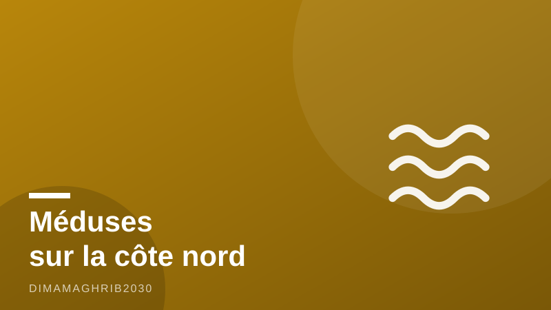

Alerte méduses sur la côte nord : ce que vous devez savoir avant d'aller à la plage à Tanger, Tétouan ou Al HoceïmaJellyfish Alert on Morocco's North Coast: What Beachgoers in Tangier, Tetouan and Al Hoceïma Need to Know

Ok, on va se parler franchement, comme entre amis. Si tu prévois une virée à la plage cette semaine du côté d'Al Hoceïma, Tanger ou Tétouan, il y a un truc dont tout le monde parle en ce moment sur la côte nord : les méduses. Et non, ce n'est pas juste des histoires de tantes qui exagèrent. Plusieurs plages de la région d'Al Hoceïma ont signalé une concentration franchement importante ces derniers jours, et les experts qui suivent ça de près préviennent que le phénomène pourrait bien remonter jusqu'à Tanger et Tétouan. Donc si tu comptais faire ta baignade tranquille ce week-end, autant le savoir maintenant plutôt que de le découvrir avec une jambe qui brûle.
Ce qui se passe vraiment sur nos plages
Je vais être honnête avec toi : ce n'est pas la première fois qu'on a des méduses au Maroc, c'est un peu cyclique selon les courants et la température de l'eau. Mais cette année, l'alerte méduses Maroc plage prend une ampleur qu'on n'avait pas vue depuis un moment. Et ce n'est pas tout : l'association AM3D, qui suit ces questions de sécurité estivale de près, a carrément élargi son alerte à d'autres risques classiques de l'été marocain — moustiques, scorpions, serpents, la totale. Ils appellent tout le monde à rester vigilant, et franchement, je trouve ça sage plutôt qu'alarmiste. On vit dans un pays magnifique, mais la nature ne prévient pas toujours avant de mordre (ou de piquer).
Pour l'alerte méduses Al Hoceïma spécifiquement, les habitués du coin te le diront : regarde toujours les drapeaux et panneaux plantés par les autorités locales avant de te jeter à l'eau. Un drapeau rouge ou une pancarte méduses, ce n'est pas décoratif, c'est littéralement là pour te sauver une après-midi gâchée. Et pour Tanger Tétouan méduses, même conseil : la situation évolue vite avec les courants, donc ce qui était calme hier peut ne plus l'être aujourd'hui.
Piqûre de méduse : que faire (et ce qu'il ne faut surtout pas faire)
Bon, disons que malgré toutes les précautions, ça t'arrive quand même — une piqûre de méduse que faire, concrètement ? D'abord, ne frotte pas la zone avec du sable, contrairement à ce que ta grand-mère t'a peut-être dit. Rince à l'eau de mer (pas l'eau douce, ça peut aggraver les choses), retire délicatement les résidus visibles, et surtout évite tout contact direct supplémentaire avec l'animal, même s'il te paraît "mort" sur le sable — les tentacules peuvent encore piquer. Si les symptômes persistent, s'aggravent, ou si tu sens une réaction allergique (difficulté à respirer, gonflement important, vertiges), file voir un médecin immédiatement, ne traîne pas en te disant que ça va passer.
Le plan sécurité plage Maroc 2026 : du mieux, mais reste attentif
La bonne nouvelle dans tout ça, c'est que le pays prend le sujet au sérieux. Le plan sécurité plage Maroc 2026 mise sur des drones de surveillance pour repérer les bancs de méduses et les baigneurs en difficulté, un recrutement supplémentaire de maîtres-nageurs sur les plages les plus fréquentées, et des tests réguliers de la qualité de l'eau. C'est un vrai pas en avant, et en tant que Marocain qui a grandi les pieds dans le sable de ces plages nord Maroc danger ou pas, je peux te dire que ce genre d'investissement change vraiment la donne niveau sécurité globale, pas seulement pour les méduses d'ailleurs.
Cela dit, un drone ne remplace pas ton bon sens. Mon conseil d'ami : avant de partir, jette un œil aux infos locales ou demande directement aux vendeurs de plage et loueurs de transats sur place, ils sont souvent les premiers au courant. Et surtout, ne confonds pas ce genre d'alerte active avec les certifications Pavillon Bleu dont tu entends parler ailleurs — c'est un tout autre sujet, ici on parle d'un risque réel et immédiat, pas d'un label de propreté. Profite de la mer, elle est magnifique cet été, juste garde les yeux ouverts et fais confiance aux panneaux plutôt qu'à ton insouciance.
Alright, let's talk like actual friends here, not like some glossy brochure. If you're planning a beach day anywhere along the north coast this week — Al Hoceïma, Tangier, Tetouan — there's something everyone's buzzing about right now: jellyfish. And no, it's not just your auntie being dramatic. Beaches in the Al Hoceïma region have reported a genuinely strong jellyfish concentration in recent days, and experts tracking the situation are warning it could extend further along to Tangier and Tetouan. So if you were planning a lazy swim this weekend, better to know now than to find out the hard way with a stinging leg.
What's actually going on out there
I'll be straight with you: this isn't the first time Morocco has dealt with jellyfish, it happens somewhat cyclically depending on currents and water temperature. But this year's jellyfish Morocco beach warning feels like it's got more weight behind it than usual. On top of that, the association AM3D, which keeps a close eye on summer safety issues, has been warning about a broader set of risks — jellyfish, mosquitoes, scorpions, snakes, the whole lineup — and urging people to stay alert. Honestly, I think that's smart, not alarmist. We live in a beautiful country, but nature doesn't always send a warning text before it bites (or stings).
For the jellyfish alert Al Hoceïma specifically, anyone who's local will tell you the same thing: always check the flags and posted warning signs before you wade in. A red flag or a jellyfish sign isn't there for decoration, it's genuinely there to save your afternoon. And for Tangier Tetouan jellyfish situations, same advice applies — currents shift fast, so what was calm yesterday might not be today.
Jellyfish sting: what to actually do (and what not to)
Let's say despite all the precautions, it happens to you anyway. Here's the real deal on what to do after a jellyfish sting. First, don't rub the area with sand, no matter what your grandmother told you. Rinse with seawater, not fresh water, since that can actually make things worse, gently remove any visible tentacle residue, and avoid any further direct contact with the animal even if it looks "dead" on the sand, because tentacles can still sting. If symptoms persist, get worse, or you notice signs of an allergic reaction — trouble breathing, significant swelling, dizziness — go see a doctor immediately, don't just wait it out hoping it'll pass.
Morocco's 2026 beach safety plan: better, but stay sharp
The good news here is that the country is taking this seriously. Morocco's 2026 beach safety plan combines spotter drones to track jellyfish swarms and swimmers in trouble, additional lifeguard recruitment at busier beaches, and regular water-quality testing. That's a real step forward, and as a Moroccan who grew up with sand between my toes on these very north coast beaches, I can tell you investments like this genuinely move the needle on overall safety, not just for jellyfish either.
That said, a drone doesn't replace common sense. My honest tip as a friend: check local updates before you head out, or just ask the beach vendors and sunbed rental guys on site, they usually know first. And don't confuse this kind of active hazard alert with Blue Flag beach-quality certifications you might hear about elsewhere, that's a completely different topic. Here we're talking about a real, immediate risk, not a cleanliness label. Go enjoy the sea, it's stunning this time of year, just keep your eyes open and trust the signs over your own carelessness.